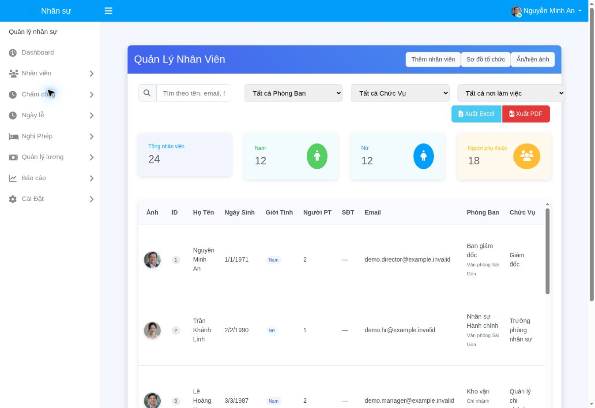
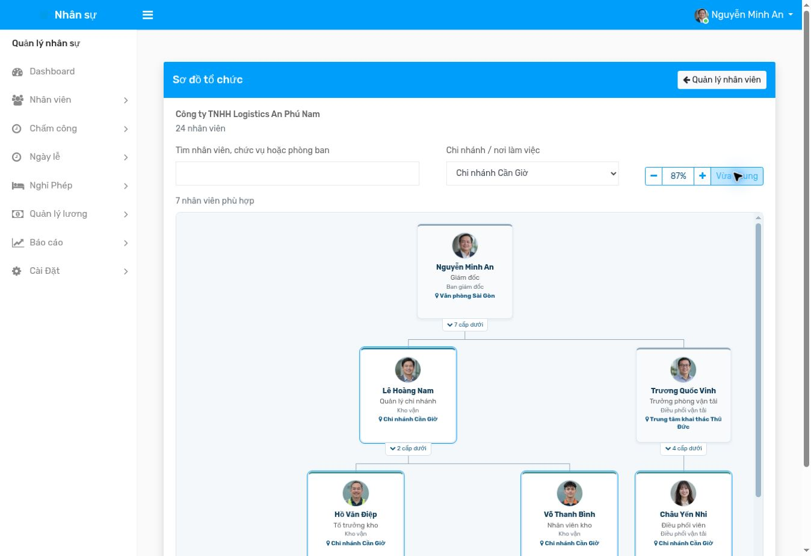

Phân quyền và duyệt lương
Nhân viên truy cập phiếu của mình. Quản lý rà soát cấp dưới trực tiếp. Kế toán và giám đốc duyệt hoặc trả lại theo trạng thái.
Xem mã phân quyềnDự án nhóm · HR Management System
Hồ sơ, chấm công và bảng lương cho doanh nghiệp nhiều chi nhánh.
Kỳ lương tháng 10/2026
Điều phối vận tải · Thủ Đức
Nhân viên kiểm tra phiếu của mình trước khi xác nhận.
Xem phiếu lương của mình, xác nhận hoặc yêu cầu chỉnh sửa.
Mô phỏng trên trình duyệt bằng dữ liệu hư cấu. Mở trực tiếp, không cần tài khoản.
Ảnh chụp bản ASP.NET Core đang chạy với dữ liệu mẫu.


Từ thao tác trên giao diện đến quy tắc được kiểm tra trong mã nguồn ASP.NET Core.
Nhân viên truy cập phiếu của mình. Quản lý rà soát cấp dưới trực tiếp. Kế toán và giám đốc duyệt hoặc trả lại theo trạng thái.
Xem mã phân quyềnXem trước, kiểm tra từng dòng và gán chi nhánh, quản lý trực tiếp. Hàng lỗi được giữ lại để sửa sau khi lưu hàng hợp lệ.
Xem luồng nhập ExcelHủy duyệt lễ giữ lại công thực tế. Kỳ đã có bảng lương được chặn thay đổi lịch lễ để kế toán đối soát.
Xem luồng duyệt ngày lễỨng dụng được kiểm tra trên cơ sở dữ liệu mẫu với 81 lượt mở trang theo 5 vai trò. Các luồng gồm nhập Excel, duyệt ngày lễ và duyệt lương. Đổi chi nhánh hoặc mức lương giữa tháng hiện cần kế toán đối soát trước khi tính.